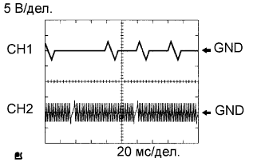
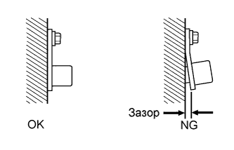

DTC P0335 Цепь датчика положения коленчатого вала "A" |
DTC P0339 Прерывистый сигнал в цепи "A" датчика положения коленчатого вала |
| № DTC | Условие обнаружения DTC | Неисправный участок |
| P0335 | Выполняется любое из следующих условий:
|
|
| P0339 | При выполнении условий (a), (b) и (c) сигнал датчика положения коленчатого вала не поступает в ECM в течение более 0,05 с (логика диагностирования за 1 поездку): (a) Частота вращения коленчатого вала двигателя составляет 1000 об/мин и более. (b) Состояние OFF (ВЫКЛ) сигнала стартера. (c) Прошло не менее 3 с после переключения сигнала стартера из состояния ON (ВКЛ) в OFF (ВЫКЛ). |
|
|  |
| Параметр / Устройство | Описание |
| Название контакта ECM | CH1: G2 - NE- CH2: NE+ - NE- |
| Рабочий диапазон диагностического прибора | 5 В/дел. 20 мс/ дел. |
| Условие | Холостые обороты при прогретом двигателе |
| 1.СНИМИТЕ ПОКАЗАНИЯ ПОРТАТИВНОГО ДИАГНОСТИЧЕСКОГО ПРИБОРА (ENGINE SPEED) |
Подсоедините портативный диагностический прибор к DLC3.
Установите замок зажигания в положение ON (ВКЛ).
Включите портативный диагностический прибор.
Войдите в следующие меню: Powertrain / Engine and ECT / Data List / Engine Speed.
Запустите двигатель.
Считайте значения, отображенные на диагностическом приборе, во время работы двигателя.
|
| ||||
| OK | ||
| ||
| 2.ПРОВЕРЬТЕ ДАТЧИК ПОЛОЖЕНИЯ КОЛЕНЧАТОГО ВАЛА (СОПРОТИВЛЕНИЕ) |
Проверьте датчик положения коленчатого вала (Нажмите здесь).
|
| ||||
| OK | |
| 3.ПРОВЕРЬТЕ ЖГУТ ПРОВОДОВ И РАЗЪЕМ (ДАТЧИК ПОЛОЖЕНИЯ КОЛЕНЧАТОГО ВАЛА - ECM) |
Отсоедините разъем датчика положения коленчатого вала.
Отсоедините разъем ЭБУ.
Измерьте сопротивление в соответствии со значениями, приведенными в таблице ниже.
| Подключение диагностического прибора | Условие | Заданные условия |
| C53-1 - C62-12 (NE+) | Всегда | Менее 1 Ом |
| C53-2 - C62-5 (NE-) | Всегда | Менее 1 Ом |
| Подключение диагностического прибора | Условие | Заданные условия |
| C53-1 или C62-12 (NE+) - масса | Всегда | 10 кОм или более |
| C53-2 или C62-5 (NE-) - масса | Всегда | 10 кОм или более |
Подсоедините разъем ECM.
Вновь подсоедините разъем датчика положения коленчатого вала.
|
| ||||
| OK | |
| 4.ПРОВЕРЬТЕ УСТАНОВКУ ДАТЧИКА (ДАТЧИК ПОЛОЖЕНИЯ КОЛЕНЧАТОГО ВАЛА) |
|  |
Проверьте установку датчика положения коленчатого вала.
|
| ||||
| OK | |
| 5.ПРОВЕРЬТЕ ЗУБЧАТЫЙ ДИСК ДАТЧИКА ПОЛОЖЕНИЯ КОЛЕНЧАТОГО ВАЛА (ЗУБЦЫ ДИСКА ДАТЧИКА) |
Проверьте зубцы диска датчика.
|
| ||||
| OK | ||
| ||